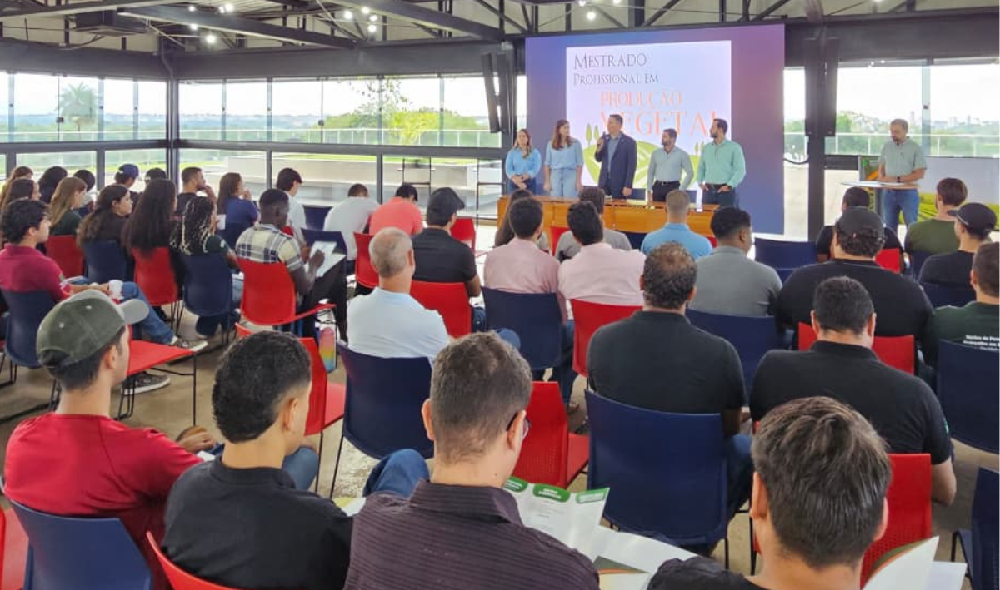

IFTM promove I Simpósio de Tecnologia e Inovação na Produção Vegetal

O Instituto Federal do Triângulo Mineiro (IFTM) realizou, no dia 20 de março, o I Simpósio de Tecnologia e Inovação na Produção Vegetal. O evento, sediado no Moon Hub, no Parque Tecnológico de Uberaba, foi organizado pelo Programa de Mestrado Profissional em Produção Vegetal em conjunto com a Pró-Reitoria de Pesquisa, Pós-Graduação e Inovação (Propi). A iniciativa reuniu um público diversificado, composto por mestrandos, estudantes de graduação, palestrantes e profissionais do mercado, consolidando-se como um espaço para a discussão de tendências do agronegócio.
A programação foi dividida em dois momentos distintos. No período da manhã, o público acompanhou palestras sobre empreendedorismo, pesquisa, financiamento, inovação e demandas das empresas no Setor Agrícola. Já na parte da tarde, o evento abriu espaço para discussão de tendência para manejo e melhoramento de culturas. Além do relato de experiência com egresso do mestrado profissional. Essa dinâmica funcionou como uma vitrine mútua: permitiu que os estudantes visualizassem oportunidades de carreira e que a comunidade externa conhecesse a excelência do corpo técnico formado pelo Instituto. A parceria com o Moon Hub também foi celebrada, reafirmando o Parque Tecnológico de Uberaba como um ambiente de inovação constante para as atividades do IFTM.
Presente no evento, o reitor do IFTM, Marcelo Ponciano da Silva, ressaltou a importância de eventos que unam a pesquisa acadêmica à prática de mercado. “A realização deste primeiro simpósio demonstra a maturidade do nosso Mestrado em Produção Vegetal e a força das nossas ações de inovação. Quando ocupamos espaços como o Parque Tecnológico e integramos nossos alunos a profissionais e egressos, estamos cumprindo nossa missão de promover o desenvolvimento regional. O IFTM reafirma aqui seu papel de liderança técnica, mostrando que a pesquisa produzida em nossos laboratórios tem aplicação direta e imediata na melhoria da produção vegetal no país”, afirmou o reitor.
A viabilização do simpósio foi possível graças ao apoio do Programa de Extensão da Educação Superior na Pós-Graduação (PROEXT-PG), da Coordenação de Aperfeiçoamento de Pessoal de Nível Superior (CAPES). O IFTM, por meio da Propi, foi contemplado em edital específico para a captação desses recursos, que visam justamente fomentar ações de extensão dentro dos programas de stricto sensu. Para a pró-reitora de Pesquisa, Pós-Graduação e Inovação, Érica Crosara, a execução do projeto representa um marco para a instituição. “Este foi um evento muito valioso para a troca de experiências e atualização, permitindo falar de inovação e tecnologia em uma área vital. O recurso nos permitiu levar nosso corpo técnico e nossos estudantes para além dos muros da instituição, compartilhando com a sociedade o que produzimos de melhor”, destacou.